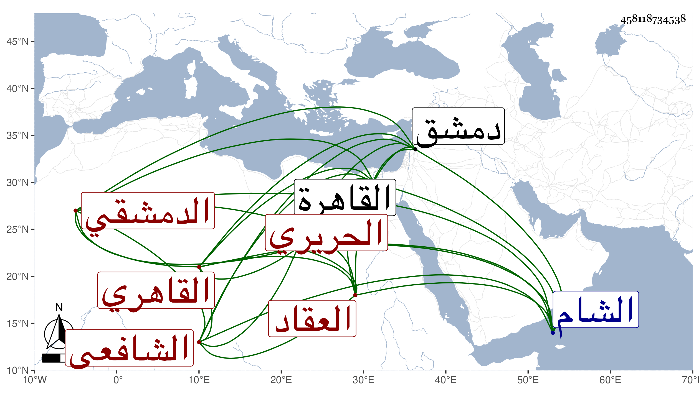

0902Sakhawi.DawLamic.ITO20230111-ara1.EIS1600.458118734538
Biography ID: 458118734538
25
محمد بن محمد بن محمد الشمس الدمشقي ثم القاهري الشافعي الحريري العقاد ويعرف بالتنكزي لكثرة عمله أشغال تنكز نائب الشام . ولد كما بخطه في سنة اثنتين وسبعين وسبعمائة بدمشق وقدم القاهرة فسمع على ابن الكويك بقراءة شيخنا النسائي الكبير وصحيح مسلم بفوت فيه وسمع على غيره ممن تأخر وقطنها وحدث بالكتابين قرأتهما عليه مع غيره للولد ، وكان شيخا صالحا محبا في الحديث وأهله راغبا في الإسماع جدا بدون تكلف بارعا في صنعته تدرب به فيها جماعة مع استحضار لمتون وفوائد حفظها من المواعيد ونحوها وبلغني أنه ورث من زوجة له أزيد من خمسمائة دينار فبثها في الفقراء والأطفال وآخر ما علمته حدث في سنة سبعين ومات في التي تليها ورأيت من زاد بآخر نسبه عبد الرحمن بن عبد الستار .
